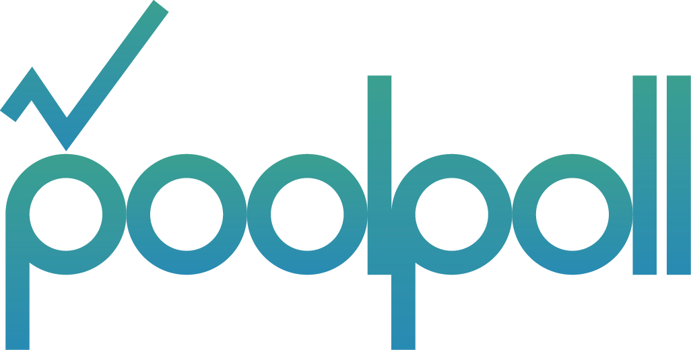

<dom-module id="free-poll-menu-list">
	<template>
		<style>
			.vertical {
				display: flex;
				flex-direction: column;
				height: 100%;
			}
			li {
				color: #ffffff;
				padding-left: 3%;
				font-size: 2vh;
				width: 100%;
			}
			.spacer {
				flex: 1;
			}
			.tail {
				flex: 1;
			}
			.tail-img {
				display: block;
				margin: auto;
				height: 8vh;
			}
		</style>
		<custom-ajax
			auto
		 	resource-url="menus"
		 	last-response="{{menuList}}">
	 	</custom-ajax>

		<div class="vertical">
			<div class="menu-items">
				<template is="dom-repeat" items="{{menuList}}">
					<paper-item on-tap="_menuSelected"><li>[[item.name]]</li></paper-item>
				</template>
			</div>

			<div class="spacer"></div>

			<div class="tail">
				
			</div>
		</div>
	</template>
	<script>
		Polymer({
			is: 'free-poll-menu-list',

			properties: {

				/**
				 * ajax 호출을 통해 menus 테이블에서 조회한 menu 리스트
				 * @type {Array}
				 */
				menuList: {
					type: Array,
					observer: '_menuListChanged'
				}
			},

			/**
			 * menuList가 변경될 때 마다 호출되며
			 * menuList의 값이 없을 경우 sign_in 페이지로 이동 (menuList의 값이 없다는 것은 인증이 안되었다고 가정)
			 * menuList의 값이 있을 경우 main 페이지로 이동 (인증이 완료되었다고 가정)
			 * @param  {Array} menuList
			 */
			_menuListChanged: function(menuList) {
				if(!menuList) {
					page('/sign_in');
					this.fire('route-changed-to-sign_in');
				} else {
					page('/main');
					this.fire('route-changed-to-main');
				}
			},

			/**
			 * 사이드 메뉴에서 메뉴를 선택 했을 때 호출 되며
			 * 선택한 route로 화면을 전환
			 * @param  {Object} event 사이드 메뉴에서 메뉴 클릭시 발생한 이벤트
			 */
			_menuSelected: function(event) {
				page('/' +  event.model.item.route);
				this.fire('mg-side-menu-toggle');
			}
		})
	</script>
</dom-module>
